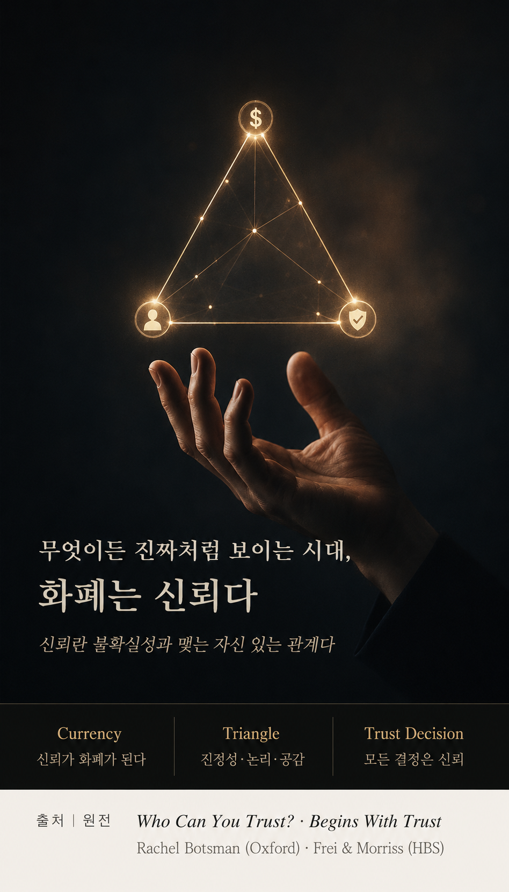

이 글에서 '신뢰'는 착함이나 친밀감을 뜻하지 않는다. 봇스먼의 정의처럼 불확실성과 맺는 자신 있는 관계, 곧 상대의 역량과 인격을 근거로 결과가 보장되지 않은 상황에서도 기꺼이 의지하기로 하는 판단이다. 감정이 아니라 설계할 수 있는 자본이다.
Section Ⅰ · Trust Becomes Currency신뢰가 화폐가 되는 이유
무엇이든 진짜처럼 보일 때,
귀해지는 것은 믿음이다
AI는 이제 그럴듯한 보고서와 목소리, 얼굴, 심지어 판단까지 순식간에 만들어 낸다. 무엇이든 진짜처럼 보이는 세계에서 오히려 값이 오르는 것은 정말로 믿을 수 있다는 사실, 곧 신뢰성(trustworthiness)이다.
레이철 봇스먼은 이 변화를 일찍이 이렇게 요약했다. 신뢰가 '새로운 경제의 화폐'가 된다고. 우리가 낯선 사람의 집에 묵고(에어비앤비), 얼굴도 모르는 이의 차에 타는(우버) 것은 기술 자체보다 기술이 만들어 낸 신뢰의 구조 덕분이다. AI 시대에 이 화폐는 더 귀해진다.
그러나 그 화폐는 지금 부족하다. 2025 Edelman Trust Barometer에서 AI에 대한 신뢰는 나라별로 극단적으로 갈렸다. 중국은 87%인데 미국은 32%에 그친다. 자사의 AI 사용조차 편안하게 여기는 직원이 절반 남짓(56%)이다. 신뢰가 기술의 성능이 아니라 관계와 경험의 문제임을 보여 주는 숫자다.
"AI 붐에서 빠진 재료는 신뢰다."Trust is the missing ingredient in the AI boom. — Richard Edelman
Section Ⅱ · The Trust Triangle신뢰의 삼각형
감정이라 불리지만,
실은 세 기둥 위에 선다
프랜시스 프라이와 앤 모리스는 신뢰가 세 기둥 위에 선다고 말한다. 사람들은 당신에게서 진짜 모습을 본다고 느낄 때(진정성, Authenticity), 당신의 판단과 역량을 믿을 수 있을 때(논리, Logic), 그리고 당신이 자신을 진심으로 위한다고 믿을 때(공감, Empathy) 비로소 당신을 신뢰한다.
출처: Frances Frei & Anne Morriss, Begins With Trust (HBR, 2020)
그래서 중요한 것은 진단이다. 신뢰가 흔들릴 때는 대개 세 기둥 중 하나가 먼저 무너진다. 어느 쪽이 흔들리는지(프라이는 이를 'trust wobble'이라 부른다)를 찾아야 회복이 시작된다. 논리가 문제라면 근거와 설명 방식을 손보고, 공감이 문제라면 시선을 상대에게 돌리며, 진정성이 문제라면 쓰고 있던 가면부터 벗는다.
"우리 경험상 신뢰에는 세 가지 핵심 동력이 있다. 진정성, 논리, 그리고 공감."In our experience, trust has three core drivers: authenticity, logic, and empathy. — Frances Frei & Anne Morriss, Begins With Trust
봇스먼은 여기에 두 축을 더한다. 역량(competence)과 인격(character)이다. 유능하기만 해도, 선하기만 해도 신뢰는 완성되지 않는다. 잘하는데 믿음이 안 가거나 착한데 무능하면 우리는 의지하지 않는다. 두 축이 함께 설 때 신뢰는 비로소 화폐가 된다.
Section Ⅲ · Every AI Decision Is a Trust Decision모든 AI 결정은 신뢰 결정이다
신뢰는 선언되지 않는다
축적될 뿐이다
하버드의 산드라 수커는 리더에게 모든 AI 관련 결정을 '신뢰 결정'으로 다루라고 말한다. 어떤 데이터를 쓰는지, 무엇을 자동화하고 무엇을 사람이 쥐는지, 틀렸을 때 누가 책임지는지. 결국 신뢰 가능성은 역량과 인격(동기·수단·영향)이라는 두 가지로 판가름난다.
희망은 경험에 있다. Edelman은 AI에 대한 망설임이 나쁜 경험보다 낯섦에서 온다고 말한다. 직접 써 보고 도움을 받아 본 사람일수록 신뢰는 가파르게 오른다. 그러니 리더가 할 일은 멋진 선언이 아니라 투명성과 일관성, 설명책임을 반복해 보여 주는 것이다. 신뢰는 말보다 쌓인 행동으로 자란다.
사람을 이해하고(Vol. 06), 인간다움을 지키고(Vol. 07), 두뇌에 투자하고(Vol. 08), 분별로 결정하는(Vol. 09) 모든 일은 하나의 전제 위에 선다. 그 판단을 사람들이 신뢰할 수 있어야 한다는 것이다. 신뢰가 없으면 아무리 뛰어난 분별도 조직을 움직이지 못한다.